A walk-through of building a complete Pub Quiz Manager application in ServiceNow Studio, one prompt at a time.
This workshop walks participants through building a Pub Quiz Manager application in ServiceNow Studio using Build Agent. The session uses progressive prompts that build on each other, starting with a simple foundation and ending with workflow automation and a Now Assist integration.
The structure is designed so participants can see Build Agent extend an existing app, not just create one from scratch — which is where the real magic shows.
Problem: we want to create an application to manage local pub quizzes, and we've decided to try to build it using AI. So first we need to decide what the problem is — we want our app to do the following:
From this, we can start to create our first prompt:
Take this prompt and paste it into Build Agent. It will have a think for a bit and come up with a plan that it will want you to review:
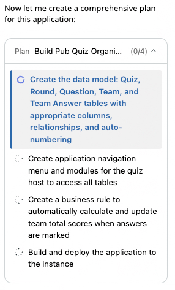
If you're happy with the plan, click Approve to proceed. After some time, it will come up with what it has created:
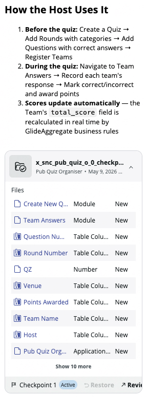
We can review everything that has been created:
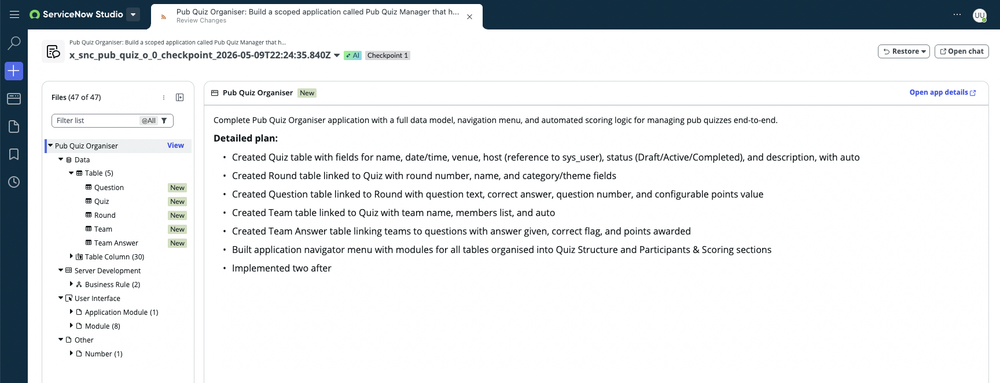
Let's go explore what's been created. We can see that Build Agent has created the tables with a little business logic and also created the basic navigation menu items:
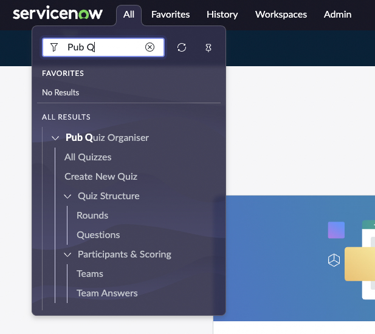
Build Agent has created a data structure which it has told us about in the output from the first build:
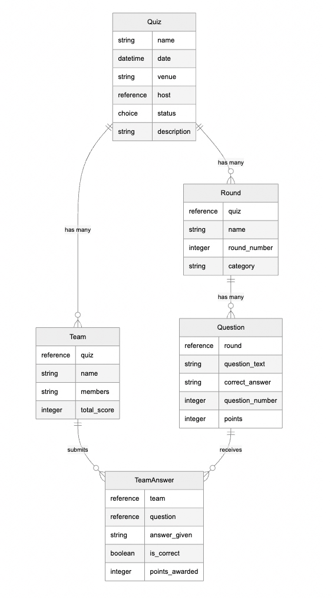
We can see it has created all the tables we need. To help visualise this more, what we need is some dummy data, so let's get that created.
Build Agent won't create test data automatically, so let's ask it to create some dummy data for us to play with:
The system will go off and create some test data for you to help build out the application:
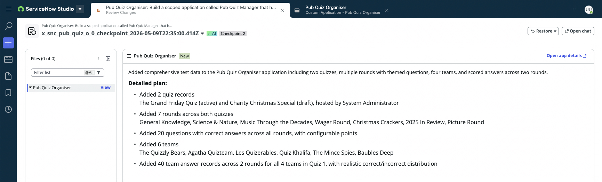
When I open a quiz record, I only see the quiz, as we haven't told Build Agent to set up the related lists. Let's do that next.
We can ask Build Agent to set these up for us as well:
Now it has completed and updated the table views for me as well:
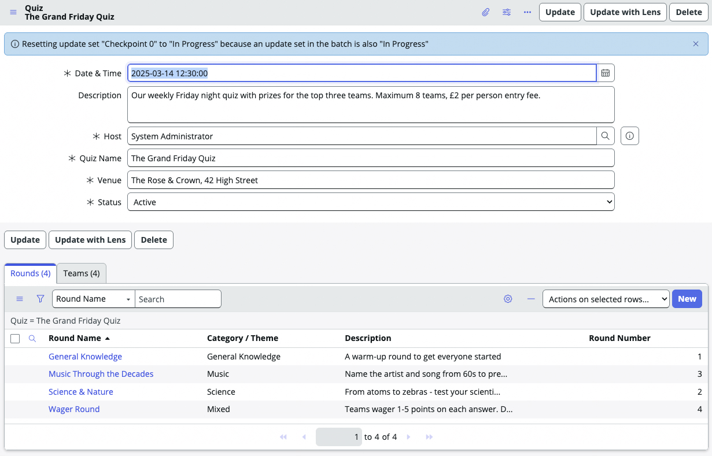
Now if I open the teams, I don't get to see the answers they have given as I didn't ask Build Agent for that as well — so maybe a better prompt would be a little more specific in what I wanted to do.
We can roll back the previous attempt and try again, so this time the prompt will be:
As you can see, the prompt this time has been a little more specific and I also added an extra clause at the end in case I missed anything.
Thankfully we are using App Engine, so we could use Workspace Builder to help us here — but we are going to ask Build Agent to create us one. This is a simple prompt to get us started:
Build Agent will now go away and create a new workspace. It will probably look pretty basic, but we can work on that:
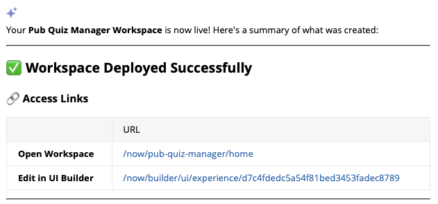
/now/pub-quiz-manager/home, with a UI Builder link for editing.Opening the workspace, we see a simple UI, but the table definitions carry across:
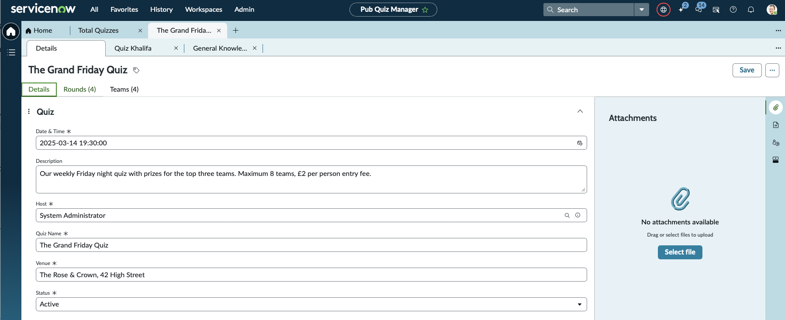
The current quiz design makes all questions active at the same time. We want to eventually add an interface for the teams to play the quiz on, so we need to add some additional information to the questions table and also add a workflow that sets all the questions to false.
Now even though we had asked for a workflow, Build Agent in its plan decided to create a business rule, so instead of just approving the plan, which looked like this:
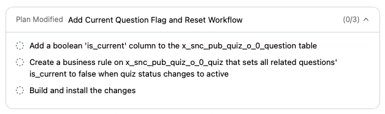
…we ask Build Agent to create a workflow with a prompt like this:
Build Agent will go away and make the appropriate changes to its plan, which now looks like this:
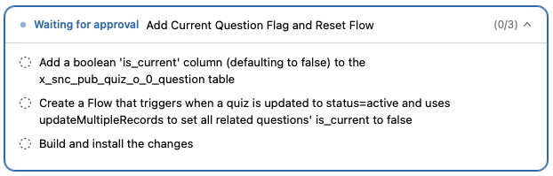
updateMultipleRecords on quiz activation.Now that we are happy with the plan, let's approve it. Once that has completed, we have a new field added to the questions table:
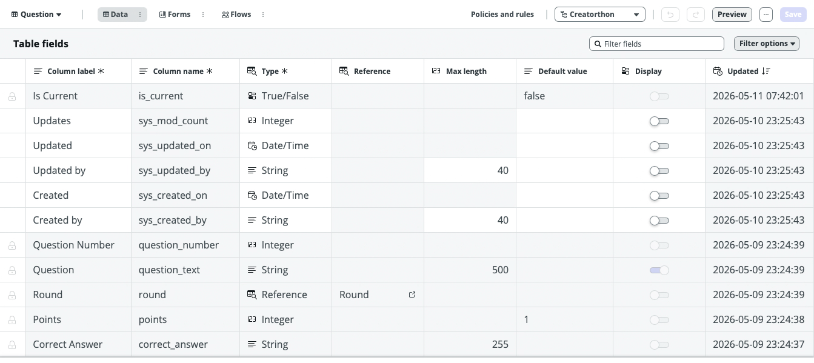
is_current boolean field on the Question table.…and we have a new workflow that has been created:
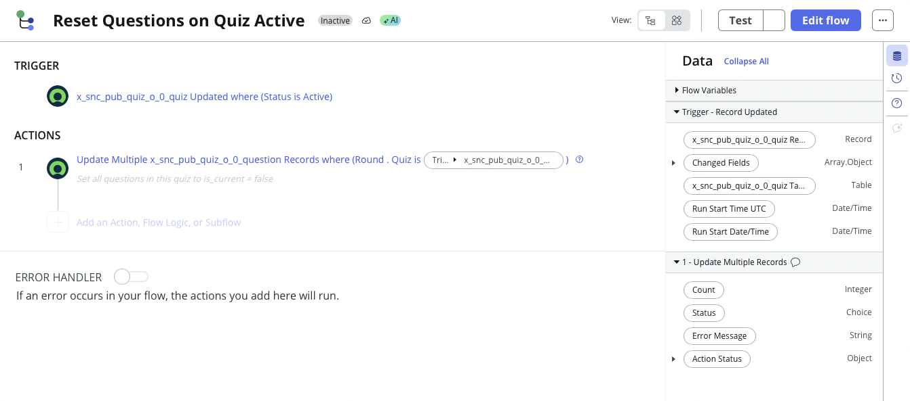
So far we have built out the table structures and a simple workflow to build the quiz, but we really want a UI that the teams can interact with. We will also need to add a team owner, who will be the user that logs into the system to answer the questions. Let's add that first before we build the UI.
We now have a team owner field:
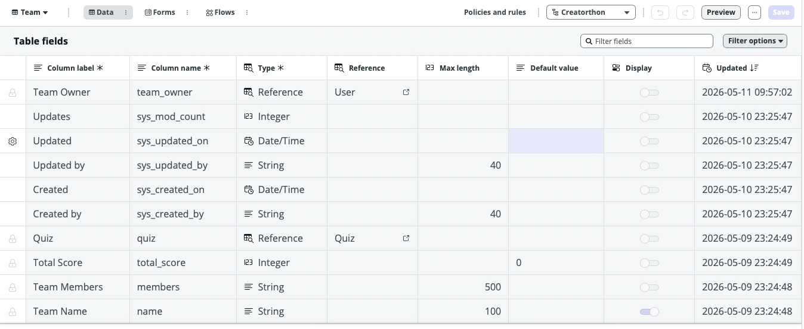
team_owner reference field on the Team table.Now let's ask Build Agent to create us a modern UI using React that team owners will interact with to answer the questions as they go active:
Make sure you are a team owner and then try and view the page. I have added myself as the team owner for two teams, so I see them both here:
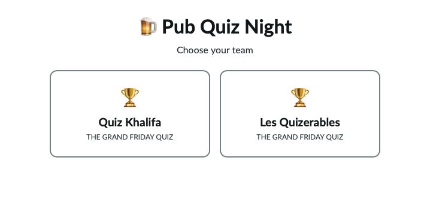
We click on a team and see the current question:
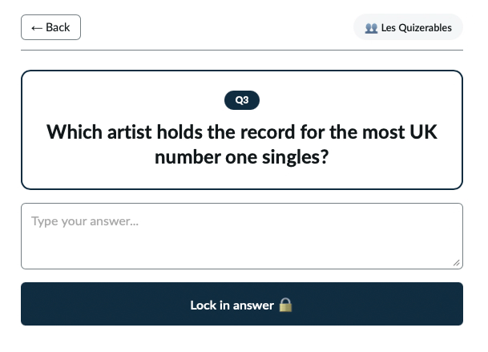
We can lock in an answer:
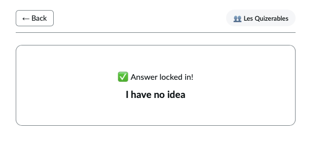
Now that we have created a workspace for the quiz admin to create the quiz and questions, and we have created a nice simple UI for the teams to interact with, now we want to create the workflows and processes to make the system move forward through the rounds and the questions when the quiz is started.
Let's ask Build Agent how we should go about this:
We are asking Build Agent to work out the best way it thinks to create this functionality and give us a plan before anything is created.
So Build Agent has come back with a proposed approach:
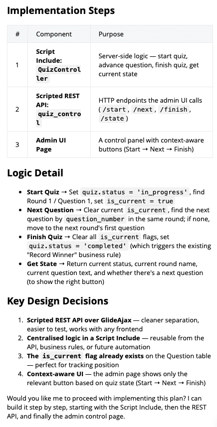
This looks sensible, so let's approve the plan and set it in action. After some work, Build Agent completed:
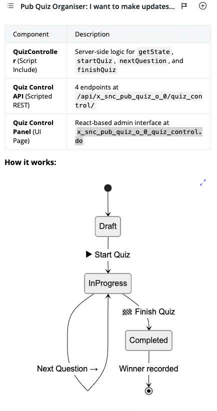
Build Agent has created a new page:
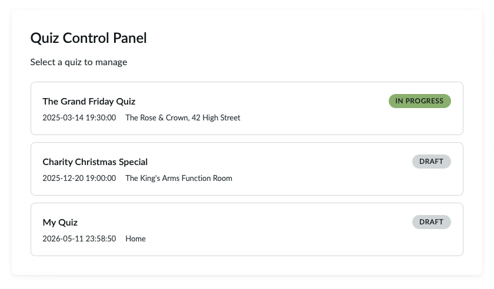
Clicking into the currently active quiz we can see what the current question is:
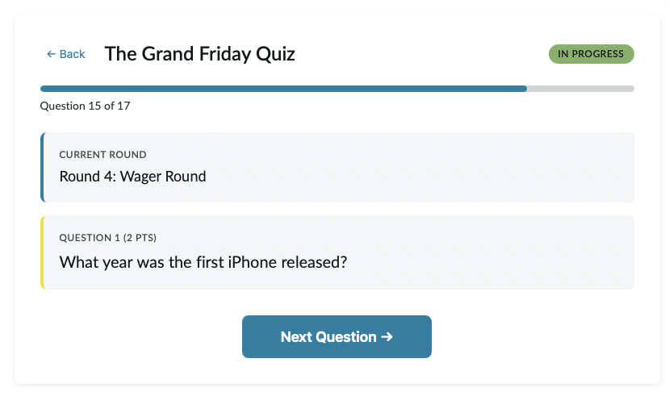
If we go in as a team and see what question is active:
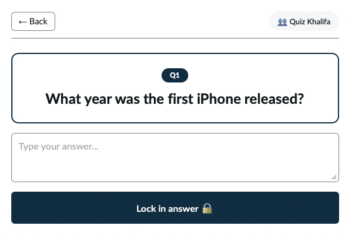
Sometimes when Build Agent is creating UI pages, especially in frameworks such as React, the page can compile and look fine, but at runtime you can get errors with the page not loaded.
So if for any reason you don't get a working page, check the JavaScript console for errors. If you see one, report it back to Build Agent — for me I had an issue with line 120, unexpected token '>':
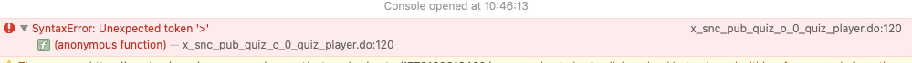
' at line 120 of quiz_player.do">Explain the error to Build Agent, give as much information as you can, don't be afraid to give a whole dump from the JavaScript console:
Normally, when Build Agent creates a new asset such as a page, it will tell you about this in the summary — but how do you find what the actual page URLs are when that summary has long gone?
In ServiceNow Studio, if you scroll down to the User Interface section, you will see the UI pages section:
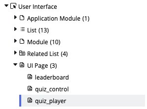
Each new page that you have asked for is there. If we click the quiz_control page, Studio will open part of the IDE — as this is a React App, the menu on the left has changed, but the endpoint of the page is shown:
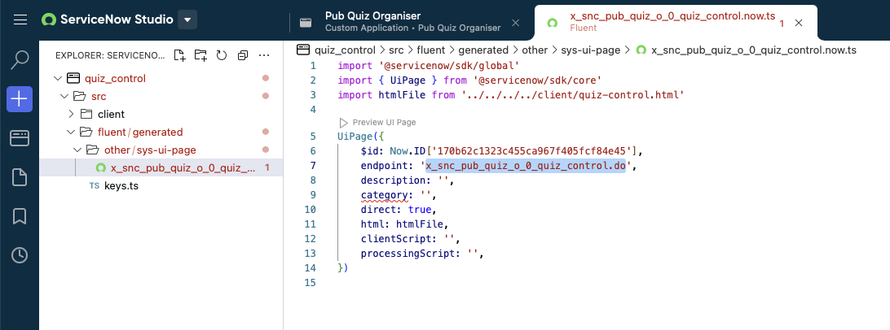
endpoint: 'x_snc_pub_quiz_o_0_quiz_control.do' visible.To get back to the previous view, click the Apps icon (just below the + sign on the left) — this will return you back to Studio.
If you grab the endpoint and add it to your server URL, such as:
…the page will now show.